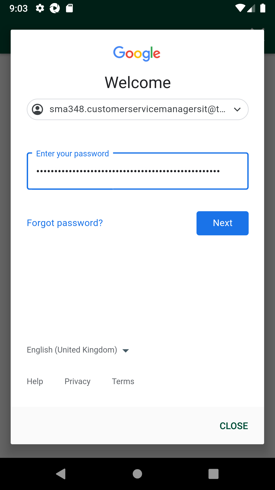
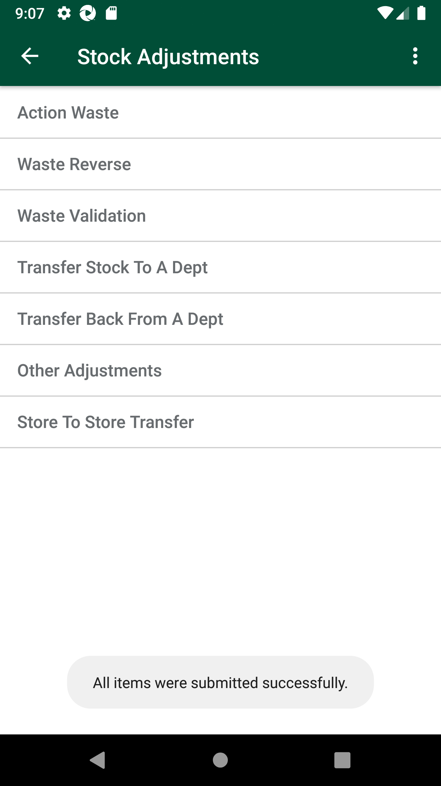
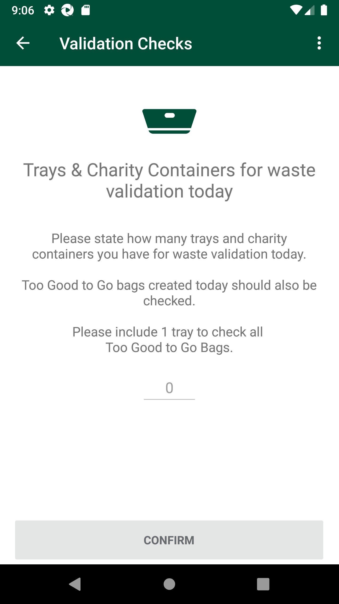
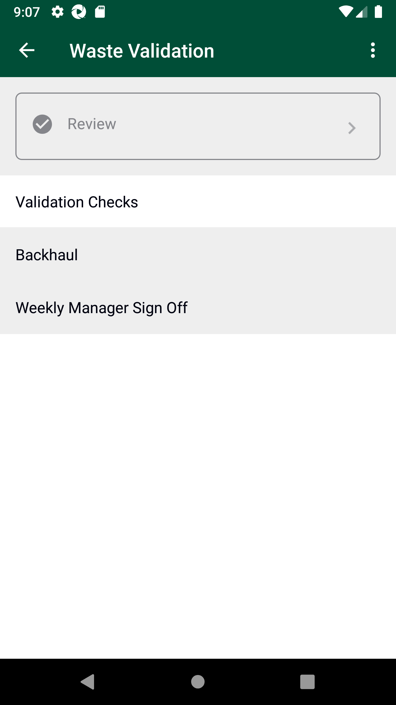
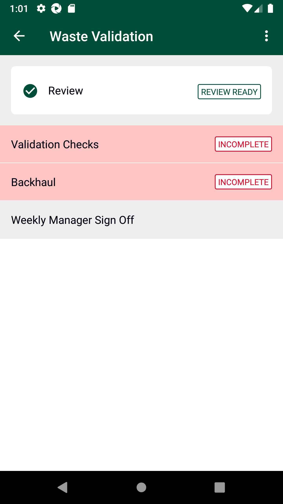

-
Verify Waste Validation Module
7:37:35 PM / 00:31:37:937 Fail
Verify Waste Validation Module
02.22.2024 7:37:35 PM 02.22.2024 8:09:13 PM 00:31:37:937 · #test-id=1@waste_validation1PassTO CHANGE THE DEVICE TIMINGS AS REQUIREDPassTO CHANGE THE DEVICE TIMINGS AS REQUIREDGiven I send the time "9" and mins "02" and meridiem "am" and current date in listThen I Change timePassTO CHANGE THE DEVICE TIMINGS AS REQUIREDGiven I send the time "9" and mins "02" and meridiem "am" and current date in listThen I Change timePassTO CHANGE THE DEVICE TIMINGS AS REQUIREDGiven I send the time "1" and mins "00" and meridiem "pm" and current date in listThen I Change timePassTO CHANGE THE DEVICE TIMINGS AS REQUIREDGiven I send the time "1" and mins "30" and meridiem "pm" and current date in listThen I Change timeFailRecord Action Waste Before 11:30 AM (FCC)FailRecord Action Waste Before 11:30 AM (FCC)When I enter Username and Password for SMA Manager usercom.morrisons.common.action.Hook.afterScenario(io.cucumber.java.Scenario)
And I click on login button for SMAStep skippedAnd I click on dynamic "sLocatorName" "Code Checking" on page 'BaseClass'Step skippedAnd I click on "Fresh Code Check" on Home PageStep skippedAnd I click on "Pre-Opening Clearance Bay Checks" on Fresh Code Check PageStep skippedAnd I search for "105236511"Step skippedAnd I select "Wastage" from the dropdownStep skippedAnd I select the date 1Step skippedAnd I enter the desired quantity "8" and Log productStep skippedAnd I select the "Waste - Out of Date" and confirmStep skippedAnd click on the List ViewStep skippedAnd I confirm Clearance Bay Check and continueStep skippedFailRecord Action Waste Before 11:30 AMFailRecord Action Waste Before 11:30 AMWhen I enter Username and Password for SMA Manager userAnd I click on login button for SMAAnd I click on "Stock Adjustments" on Home PageAnd I click on "Action Waste" on Stock Adjustment PageAnd I search for "100402904"And I click on dynamic "sLocatorName" "Charity - Damaged" on page 'CountsPO'And I enter the desired quantity "9" and confirm the sameAnd I search for "108684782"And I click on dynamic "sLocatorName" "Charity - Damaged" on page 'CountsPO'And I enter the desired quantity "9" and confirm the sameAnd I search for "103090580"And I click on dynamic "sLocatorName" "Charity - Damaged" on page 'CountsPO'And I enter the desired quantity "9" and confirm the sameAnd click on the List ViewAnd I confirm the Submit ListThen I should get a Message saying "Are you sure you want to submit the list?" and should be able to click the "SUBMIT" ButtonThen I verify scuccess "All items were submitted successfully."Then I click on 'doneButton' on page 'PopUpPO_New'com.morrisons.common.action.Hook.afterScenario(io.cucumber.java.Scenario)FailRecord Action Waste Before 11:30 AMWhen I enter Username and Password for SMA Manager userAnd I click on login button for SMAAnd I click on "Stock Adjustments" on Home PageAnd I click on "Action Waste" on Stock Adjustment PageAnd I search for "105201870"And I click on dynamic "sLocatorName" "Waste - Out of Date" on page 'CountsPO'And I enter the desired quantity "9" and confirm the sameAnd I search for "102377108"And I click on dynamic "sLocatorName" "Waste - Out of Date" on page 'CountsPO'And I enter the desired quantity "9" and confirm the sameAnd I search for "100155368"And I click on dynamic "sLocatorName" "Waste - Out of Date" on page 'CountsPO'And I enter the desired quantity "9" and confirm the sameAnd click on the List ViewAnd I confirm the Submit ListThen I should get a Message saying "Are you sure you want to submit the list?" and should be able to click the "SUBMIT" ButtonThen I verify scuccess "All items were submitted successfully."Then I click on 'doneButton' on page 'PopUpPO_New'com.morrisons.common.action.Hook.afterScenario(io.cucumber.java.Scenario)
FailRecord Action Waste Before 11:30 AMWhen I enter Username and Password for SMA Manager userAnd I click on login button for SMAAnd I click on "Stock Adjustments" on Home PageAnd I click on "Action Waste" on Stock Adjustment PageAnd I search for "110307652"And I click on dynamic "sLocatorName" "Charity - Out of Date" on page 'CountsPO'And I enter the desired quantity "9" and confirm the sameAnd I search for "111508376"And I click on dynamic "sLocatorName" "Charity - Out of Date" on page 'CountsPO'And I enter the desired quantity "9" and confirm the sameAnd I search for "108304663"And I click on dynamic "sLocatorName" "Charity - Out of Date" on page 'CountsPO'And I enter the desired quantity "5" and confirm the sameAnd click on the List ViewAnd I confirm the Submit ListThen I should get a Message saying "Are you sure you want to submit the list?" and should be able to click the "SUBMIT" ButtonThen I verify scuccess "All items were submitted successfully."Then I click on 'doneButton' on page 'PopUpPO_New'com.morrisons.common.action.Hook.afterScenario(io.cucumber.java.Scenario)FailRecord Action Waste Before 11:30 AMWhen I enter Username and Password for SMA Manager userAnd I click on login button for SMAAnd I click on "Stock Adjustments" on Home PageAnd I click on "Action Waste" on Stock Adjustment PageAnd I search for "105709930"And I click on dynamic "sLocatorName" "Waste - Damaged" on page 'CountsPO'And I enter the desired quantity "5" and confirm the sameAnd I search for "102800789"And I click on dynamic "sLocatorName" "Waste - Damaged" on page 'CountsPO'And I enter the desired quantity "5" and confirm the sameAnd I search for "107091248"And I click on dynamic "sLocatorName" "Waste - Damaged" on page 'CountsPO'And I enter the desired quantity "9" and confirm the sameAnd click on the List ViewAnd I confirm the Submit ListThen I should get a Message saying "Are you sure you want to submit the list?" and should be able to click the "SUBMIT" ButtonThen I verify scuccess "All items were submitted successfully."Then I click on 'doneButton' on page 'PopUpPO_New'com.morrisons.common.action.Hook.afterScenario(io.cucumber.java.Scenario)PassRecord Action Waste Before 11:30 AMWhen I enter Username and Password for SMA Manager userAnd I click on login button for SMAAnd I click on "Stock Adjustments" on Home PageAnd I click on "Action Waste" on Stock Adjustment PageAnd I search for "111449994"And I click on "Waste - Damaged" on Action Waste PageAnd I enter the desired quantity "9" and confirm the sameThen I should get a pop up title saying "Value Check"Then I should get a Message saying "You have entered a quantity of 9 unit(s) to the value of £54.00 Please confirm this is correct." and should be able to click the "CONFIRM" ButtonAnd click on the List ViewAnd I confirm the Submit ListThen I should get a Message saying "Are you sure you want to submit the list?" and should be able to click the "SUBMIT" ButtonAnd I click on dynamic "sLocatorName" "Waste Reverse" on page 'CountsPO'And I search for "111449994"And I enter the desired quantity "1" and confirm the sameThen I click on "Back" buttonAnd I click on "Action Waste" on Stock Adjustment PageAnd I search for "111508317"And I click on "Waste - Damaged" on Action Waste PageAnd I enter the desired quantity "9" and confirm the sameAnd click on the List ViewAnd I confirm the Submit ListThen I should get a Message saying "Are you sure you want to submit the list?" and should be able to click the "SUBMIT" ButtonAnd I click on dynamic "sLocatorName" "Waste Reverse" on page 'CountsPO'And I search for "111508317"And I enter the desired quantity "9" and confirm the sameThen I click on "Back" buttonAnd I click on "Action Waste" on Stock Adjustment PageAnd I search for "108803358"And I click on "Waste - Damaged" on Action Waste PageAnd I enter the desired quantity "5" and confirm the sameAnd click on the List ViewAnd I confirm the Submit ListThen I should get a Message saying "Are you sure you want to submit the list?" and should be able to click the "SUBMIT" ButtonAnd I click on dynamic "sLocatorName" "Waste Reverse" on page 'CountsPO'And I search for "108803358"And I enter the desired quantity "5" and confirm the sameThen I verify scuccess "Item submitted successfully"FailVerify that Waste Validation cannot be performed before 11:30 AMFailVerify that Waste Validation cannot be performed before 11:30 AMWhen I enter Username and Password for SMA Manager userAnd I click on login button for SMAAnd I click on "Stock Adjustments" on Home PageAnd I click on "Waste Validation" on Stock Adjustment PageAnd I click on "Validation Checks" on Waste Validation PageThen I should get a title saying "Validation Checks Submissions Closed" and a message saying "The submission window for waste validation is not open. Please return and complete this task between 11:30 and 13:30."com.morrisons.common.action.Hook.afterScenario(io.cucumber.java.Scenario)PassWaste Validation Check E2E for Collegue userPassWaste Validation Check E2E for Collegue userWhen I enter Username and Password for SMA Collegue userAnd I click on login button for SMAAnd I click on "Stock Adjustments" on Home PageThen "Action Waste" should get displayed on Stock Adjustment PageThen "Waste Validation" should not get displayed on Stock Adjustment PageFailWaste Validation Check E2E for Manager user with negative scenario for tray creationFailWaste Validation Check E2E for Manager user with negative scenario for tray creationWhen I enter Username and Password for SMA Manager userAnd I click on login button for SMAAnd I click on "Stock Adjustments" on Home PageThen "Action Waste" should get displayed on Stock Adjustment PageThen "Waste Validation" should get displayed on Stock Adjustment PageAnd I click on "Waste Validation" on Stock Adjustment PageAnd I verify "Review" is "Disable" and the next page option is "All"com.morrisons.common.action.Hook.afterScenario(io.cucumber.java.Scenario)And I verify "Validation Checks" is "Enable" and the next page option is "Trays & Charity Containers for waste validation today"Step skippedAnd I verify "Backhaul" is "Disable" and the next page option is "Trays for Backhaul"Step skippedAnd I verify "Weekly Manager Sign Off" is "Enable" and the next page option is "Total Unrecorded Value"Step skippedAnd I verify Weekly Manager Sign Off status "AWAITING SIGN OFF"Step skippedAnd I click on "Validation Checks" on Waste Validation PageStep skippedThen I should get the header saying "Trays & Charity Containers for waste validation today" and description saying "Please state how many trays and charity containers you have for waste validation today. Too Good to Go bags created today should also be checked. Please include 1 tray to check all Too Good to Go Bags."Step skippedAnd I create "100" traysStep skippedThen I should get a Message saying "Please check the number of trays/containers you have entered. The maximum number of trays/containers is 99." and should be able to click the "Continue" ButtonStep skippedAnd I create "4" traysStep skippedAnd I click on "Back" buttonStep skippedAnd verify the Validation Check Status is "IN PROGRESS"Step skippedAnd I click on "Validation Checks" on Waste Validation PageStep skippedAnd I add a new tray by clicking on Add ButtonStep skippedThen I should get a Message saying "Are you sure you want to add a new tray/ container?" and should be able to click the "Continue" ButtonStep skippedAnd I verify that following trays are createdTray/ Container 1 Tray/ Container 2 Tray/ Container 3 Tray/ Container 4 Tray/ Container 5 Step skippedAnd I select tray "1"Step skippedAnd I search for "105709930"Step skippedAnd I enter the desired quantity "5" and confirm the sameStep skippedAnd I search for "102800789"Step skippedAnd I enter the desired quantity "9" and confirm the sameStep skippedAnd I search for "107091248"Step skippedAnd I enter the desired quantity "2" and confirm the sameStep skippedAnd I search for "102760916"Step skippedAnd I enter the desired quantity "5" and confirm the sameStep skippedAnd click on the List ViewStep skippedAnd I complete the trayStep skippedThen I should get a Message saying "The item threshold has not been met for this waste tray. If there are no more items left in the bag to validate you may continue. This action cannot be undone." and should be able to click the "Continue" ButtonStep skippedFailValidation Check Scenario covering the entire flow and recording all types of waste in different traysFailValidation Check Scenario covering the entire flow and recording all types of waste in different traysWhen I enter Username and Password for SMA Manager userAnd I click on login button for SMAAnd I click on "Stock Adjustments" on Home PageAnd I click on "Waste Validation" on Stock Adjustment PageAnd I click on "Validation Checks" on Waste Validation PageAnd I select tray "2"com.morrisons.common.action.Hook.afterScenario(io.cucumber.java.Scenario)
And I search for "111449994"Step skippedAnd I enter the desired quantity "3" and confirm the sameStep skippedAnd I search for "111449994"Step skippedAnd I verify "ADD TO COUNT" and "EDIT COUNT" buttons displayed on screenStep skippedAnd I click on Add to Count ButtonStep skippedAnd I enter the desired quantity "3" and confirm the sameStep skippedThen I verify the new count is added with existing count6 Step skippedAnd I search for "111508317"Step skippedAnd I enter the desired quantity "5" and confirm the sameStep skippedAnd I search for "111508317"Step skippedAnd I click on Edit ButtonStep skippedAnd I enter the desired quantity "8" and confirm the sameStep skippedThen I verify the new count is replaced with existing count8 Step skippedAnd I search for "105236511"Step skippedAnd I enter the desired quantity "5" and confirm the sameStep skippedAnd click on the List ViewStep skippedAnd I verify "COMPLETE TRAY" button displayed on screenStep skippedAnd I complete the trayStep skippedThen I should get a pop up title saying "Item Threshold Not Met"Step skippedThen I should get a Message saying "The item threshold has not been met for this waste tray. If there are no more items left in the bag to validate you may continue. This action cannot be undone." and should be able to click the "Cancel" ButtonStep skippedThen I verify Product description, Product MINHovis Granary 400g 5 105236511 Step skippedThen I verify Product description, Product MINMALTESERS EASTER HUNT MIX 297.8G 8 111508317 Step skippedThen I verify Product description, Product MINGUYLIAN SEASHELLS EGG 285G 6 111449994 Step skippedAnd I complete the trayStep skippedThen I should get a Message saying "The item threshold has not been met for this waste tray. If there are no more items left in the bag to validate you may continue. This action cannot be undone." and should be able to click the "Continue" ButtonStep skippedThen verify status of tray "COMPLETE"Step skippedAnd I select tray "3"Step skippedAnd I search for "100402904"Step skippedAnd I enter the desired quantity "7" and confirm the sameStep skippedAnd I search for "108684782"Step skippedAnd I enter the desired quantity "5" and confirm the sameStep skippedAnd I search for "103090580"Step skippedAnd I enter the desired quantity "8" and confirm the sameStep skippedAnd I search for "105201870"Step skippedAnd I enter the desired quantity "6" and confirm the sameStep skippedAnd I search for "102377108"Step skippedAnd I enter the desired quantity "2" and confirm the sameStep skippedAnd I search for "100155368"Step skippedAnd I enter the desired quantity "9" and confirm the sameStep skippedAnd I verify "REVIEW & EDIT" button is displayed on screenStep skippedAnd I verify "COMPLETE TRAY" button displayed on screenStep skippedAnd verify screen with title "You have completed waste validation for Tray 3" and message "To review the checks done for this waste tray please select the button below. To complete the validation of this tray please press Complete Tray" and I click on "REVIEW & EDIT" buttonStep skippedThen I verify Product description, Product MINMARS MALTEASTER BUNNY 29G 9 100155368 Step skippedThen I verify Product description, Product MINMR KIPLING LEMON FANCIES 8PK 2 102377108 Step skippedThen I verify Product description, Product MINMIN:M GRATED MATURE WHITE CHEDDAR 250G 6 105201870 Step skippedThen I verify Product description, Product MINOCEAN SPRAY CRANBERRY JUICE 1L 8 103090580 Step skippedThen I verify Product description, Product MIN(B) MORRISONS VALENTINES DAY CUPCAKES 2PK 5 108684782 Step skippedThen I verify Product description, Product MINSCHWARTZ R/CHICKEN GRAVY 200G 7 100402904 Step skippedAnd I complete the trayStep skippedAnd I select tray "4"Step skippedAnd I search for "110307652"Step skippedAnd I enter the desired quantity "6" and confirm the sameStep skippedAnd click on the List ViewStep skippedAnd I click on "CADBURY DAIRY MILK WITH OREO EASTER EGG 31G" from listStep skippedAnd I verify "ADD TO COUNT" and "EDIT COUNT" buttons displayed on screenStep skippedAnd I click on Add to Count ButtonStep skippedAnd I enter the desired quantity "2" and confirm the sameStep skippedThen I verify the new count is added with existing count8 Step skippedAnd I click on "Back" buttonStep skippedAnd I search for "111508376"Step skippedAnd I enter the desired quantity "3" and confirm the sameStep skippedAnd click on the List ViewStep skippedAnd I click on "MILKYBAR WHITE CHOCOLATE LARGE EASTER BUNNY 88G" from listStep skippedAnd I click on Edit ButtonStep skippedAnd I enter the desired quantity "4" and confirm the sameStep skippedThen I verify the new count is replaced with existing count4 Step skippedAnd I click on "Back" buttonStep skippedAnd click on the List ViewStep skippedAnd I complete the trayStep skippedThen I should get a Message saying "The item threshold has not been met for this waste tray. If there are no more items left in the bag to validate you may continue. This action cannot be undone." and should be able to click the "Continue" ButtonStep skippedAnd I select tray "5"Step skippedAnd I search for "108803358"Step skippedAnd I enter the desired quantity "45" and confirm the sameStep skippedThen I should get a pop up title saying "Large Quantity Entered"Step skippedThen I should get a Message saying "You have entered a large quantity of this item. If the quantity is correct please press continue." and should be able to click the "Continue" ButtonStep skippedAnd I search for "108304663"Step skippedAnd I enter the desired quantity "8" and confirm the sameStep skippedAnd click on the List ViewStep skippedAnd I verify "COMPLETE TRAY" button displayed on screenStep skippedAnd I complete the trayStep skippedThen I should get a Message saying "The item threshold has not been met for this waste tray. If there are no more items left in the bag to validate you may continue. This action cannot be undone." and should be able to click the "Continue" ButtonStep skippedAnd I verify "COMPLETE CHECK" button is "Enable"Step skippedAnd I add a new tray by clicking on Add ButtonStep skippedThen I should get a Message saying "Are you sure you want to add a new tray/ container?" and should be able to click the "Continue" ButtonStep skippedAnd I verify "COMPLETE CHECK" button is "Disable"Step skippedAnd I select tray "6"Step skippedAnd I complete the trayStep skippedThen I should get a Message saying "You have not captured any items within this tray/ container. Are you sure you wish to complete this tray/ container? This action cannot be undone." and should be able to click the "Continue" ButtonStep skippedAnd I click on Complete Check buttonStep skippedAnd I click on Cancel button on Complete Check screenStep skippedAnd I verify that following trays are createdTray/ Container 1 Tray/ Container 2 Tray/ Container 3 Tray/ Container 4 Tray/ Container 5 Tray/ Container 6 Step skippedAnd I verify "COMPLETE CHECK" button is "Enable"Step skippedAnd I verify Add New Tray button is displayed and "Enable"Step skippedAnd I click on Complete Check buttonStep skippedAnd I verify Complete Check "Complete Validation Checks" on screenStep skippedAnd I click on Complete & Review button on Complete Check screenStep skippedAnd I click on "Back" buttonStep skippedAnd I click on "Validation Checks" on Waste Validation PageStep skippedAnd I verify Add New Tray button is displayed and "Disable"Step skippedAnd I verify "COMPLETE CHECK" button is "Disable"Step skippedAnd I click on "Back" buttonStep skippedAnd verify the Validation Check Status is "COMPLETE"Step skippedAnd I verify "Review" is "Enable" and the next page option is "All"Step skippedAnd verify the Review Status is "REVIEW READY"Step skippedAnd I verify "Backhaul" is "Enable" and the next page option is "Trays for Backhaul"Step skippedAnd I verify "Weekly Manager Sign Off" is "Enable" and the next page option is "Total Unrecorded Value"Step skippedAnd I verify Weekly Manager Sign Off status "AWAITING SIGN OFF"Step skippedFailVerify the review screen for the recorded waste and waste validation performed in the above scenariosFailVerify the review screen for the recorded waste and waste validation performed in the above scenariosWhen I enter Username and Password for SMA Manager userAnd I click on login button for SMAAnd I click on "Stock Adjustments" on Home PageAnd I click on "Waste Validation" on Stock Adjustment PageAnd I Verify the status of review optioncom.morrisons.common.action.Hook.afterScenario(io.cucumber.java.Scenario)
And I click on "Review" on Waste Validation PageStep skippedAnd I verify the date on Review pageStep skippedAnd I verify Review screen messageStep skippedAnd I verify the headers of review optionStep skippedAnd I click on "All" tab and verify the following details(B) BEEF BEST BRAISING STEAK FAIL 102760916 0 5 5 Step skippedAnd I click on "All" tab and verify the following details'M'SLICED LAMB LIVER FAIL 102800789 5 9 4 Step skippedAnd I click on "All" tab and verify the following detailsMORRISONS WHOLE SWEDE FAIL 108304663 5 8 3 Step skippedAnd I Scroll from 200 800 to 200 250Step skippedAnd I click on "All" tab and verify the following detailsMILKYBAR WHITE CHOCOLATE LARGE EASTER BUNNY 88G PASS 111508376 9 4 -5 Step skippedAnd I Scroll from 200 800 to 200 250Step skippedAnd I click on "All" tab and verify the following detailsCADBURY DAIRY MILK WITH OREO EASTER EGG 31G PASS 110307652 9 8 -1 Step skippedAnd I Scroll from 200 800 to 200 250Step skippedAnd I click on "All" tab and verify the following detailsMARS MALTEASTER BUNNY 29G PASS 100155368 9 9 0 Step skippedAnd I Scroll from 200 800 to 200 250Step skippedAnd I click on "All" tab and verify the following detailsMR KIPLING LEMON FANCIES 8PK PASS 102377108 9 2 -7 Step skippedAnd I Scroll from 200 800 to 200 250Step skippedAnd I click on "All" tab and verify the following detailsMIN:M GRATED MATURE WHITE CHEDDAR 250G PASS 105201870 9 6 -3 Step skippedAnd I Scroll from 200 800 to 200 250Step skippedAnd I click on "All" tab and verify the following detailsOCEAN SPRAY CRANBERRY JUICE 1L PASS 103090580 9 8 -1 Step skippedAnd I Scroll from 200 800 to 200 250Step skippedAnd I click on "All" tab and verify the following details(B) MORRISONS VALENTINES DAY CUPCAKES 2PK PASS 108684782 9 5 -4 Step skippedAnd I Scroll from 200 800 to 200 250Step skippedAnd I click on "All" tab and verify the following detailsSCHWARTZ R/CHICKEN GRAVY 200G PASS 100402904 9 7 -2 Step skippedAnd I Scroll from 200 800 to 200 250Step skippedAnd I click on "All" tab and verify the following detailsHovis Granary 400g PASS 105236511 8 5 -3 Step skippedAnd I Scroll from 200 800 to 200 250Step skippedAnd I click on "All" tab and verify the following detailsMORRISONS RASPBERRY TRIFLE 600G PASS 107091248 9 2 -7 Step skippedAnd I Scroll from 200 800 to 200 250Step skippedAnd I click on "All" tab and verify the following detailsM Kitchen Raspberry Mini Trilfes 6x33g PASS 105709930 5 5 0 Step skippedAnd I click on "Pass" tab and verify the following detailsMILKYBAR WHITE CHOCOLATE LARGE EASTER BUNNY 88G PASS 111508376 9 4 -5 Step skippedAnd I click on "Pass" tab and verify the following detailsCADBURY DAIRY MILK WITH OREO EASTER EGG 31G PASS 110307652 9 8 -1 Step skippedAnd I click on "Pass" tab and verify the following detailsMARS MALTEASTER BUNNY 29G PASS 100155368 9 9 0 Step skippedAnd I Scroll from 200 800 to 200 250Step skippedAnd I click on "Pass" tab and verify the following detailsMR KIPLING LEMON FANCIES 8PK PASS 102377108 9 2 -7 Step skippedAnd I Scroll from 200 800 to 200 250Step skippedAnd I click on "Pass" tab and verify the following detailsMIN:M GRATED MATURE WHITE CHEDDAR 250G PASS 105201870 9 6 -3 Step skippedAnd I Scroll from 200 800 to 200 250Step skippedAnd I click on "Pass" tab and verify the following detailsOCEAN SPRAY CRANBERRY JUICE 1L PASS 103090580 9 8 -1 Step skippedAnd I Scroll from 200 800 to 200 250Step skippedAnd I click on "Pass" tab and verify the following details(B) MORRISONS VALENTINES DAY CUPCAKES 2PK PASS 108684782 9 5 -4 Step skippedAnd I Scroll from 200 800 to 200 250Step skippedAnd I click on "Pass" tab and verify the following detailsSCHWARTZ R/CHICKEN GRAVY 200G PASS 100402904 9 7 -2 Step skippedAnd I Scroll from 200 800 to 200 250Step skippedAnd I click on "Pass" tab and verify the following detailsHovis Granary 400g PASS 105236511 8 5 -3 Step skippedAnd I Scroll from 200 800 to 200 250Step skippedAnd I click on "Pass" tab and verify the following detailsMORRISONS RASPBERRY TRIFLE 600G PASS 107091248 9 2 -7 Step skippedAnd I Scroll from 200 800 to 200 250Step skippedAnd I click on "Pass" tab and verify the following detailsM Kitchen Raspberry Mini Trilfes 6x33g PASS 105709930 5 5 0 Step skippedAnd I click on "Fail" tab and verify the following details(B) BEEF BEST BRAISING STEAK FAIL 102760916 0 5 5 Step skippedAnd I click on "Fail" tab and verify the following details'M'SLICED LAMB LIVER FAIL 102800789 5 9 4 Step skippedAnd I click on "Fail" tab and verify the following detailsMORRISONS WHOLE SWEDE FAIL 108304663 5 8 3 Step skippedAnd I click on tab "All"Step skippedAnd I verify the waste reversal min "111449994"Step skippedFailSMA-33937 Verify Backhaul end to end functionalityFailSMA-33937 Verify Backhaul end to end functionalityWhen I enter Username and Password for SMA Manager userAnd I click on login button for SMAAnd I click on "Stock Adjustments" on Home PageAnd I click on "Waste Validation" on Stock Adjustment PageAnd I click on "Backhaul" on Waste Validation PageAnd I verify backhaul header and tray count description "Please enter the number of trays that are currently waiting to be returned as part of the backhaul process. Including what you have validated today."com.morrisons.common.action.Hook.afterScenario(io.cucumber.java.Scenario)And I enter tray quantity "999" and confirm the sameStep skippedAnd I verify backhaul header and Pallet count description "Please enter the number of pallets that are currently waiting to be returned as part of the backhaul process. Including any added as part of the process today."Step skippedAnd I enter pallet quantity "99" and confirm the sameStep skippedAnd I verfiy backhaul overview Screen and description "Please check the quantities you have entered are correct and then press confirm."Step skippedAnd I verify trayquantity "999" and pallet quantity "99"Step skippedAnd I verify user able to edit count "880" tray for backhaul and pallet for backhaul quantity "88"Step skippedAnd I click confirm backhaul overviewStep skippedAnd I verify backhaul status "COMPLETE"Step skippedAnd I click on "Backhaul" on Waste Validation PageStep skippedAnd I verify user not able edit quantity in backhaul overview screenStep skippedFailVerify Deadline Reminder pop-up at 1:00 PMFailVerify Deadline Reminder pop-up at 1:00 PMWhen I enter Username and Password for SMA Manager userAnd I click on login button for SMAAnd I click on "Stock Adjustments" on Home PageAnd I click on "Waste Validation" on Stock Adjustment PageThen I should get a pop up title saying "Deadline Reminder"com.morrisons.common.action.Hook.afterScenario(io.cucumber.java.Scenario)
Then I should get a Message saying "The deadline for Waste Validation is 01:30 PM." and should be able to click the "OK" ButtonStep skippedPassVerify that Waste Validation cannot be performed after 1:30 PMPassVerify that Waste Validation cannot be performed after 1:30 PMWhen I enter Username and Password for SMA Manager userAnd I click on login button for SMAAnd I click on "Stock Adjustments" on Home PageAnd I click on "Waste Validation" on Stock Adjustment PageAnd I click on "Validation Checks" on Waste Validation PageThen I should get a title saying "Validation Checks Submissions Closed" and a message saying "The submission window is now closed. Please place appropriate trays with the backhaul ready for collection. Do NOT include these trays in tomorrow's validation check. Appropriate products will be automatically wasted as unrecorded items."
-
java.lang.AssertionError
1 tests
java.lang.AssertionError
1 failedStatus Timestamp TestName Fail 19:57:22 PM And I verify "Review" is "Disable" and the next page option is "All" Verify Waste Validation Module.Waste Validation Check E2E for Manager user with negative scenario for tray creation.And I verify "Review" is "Disable" and the next page option is "All" -
java.lang.ClassNotFoundException
4 tests
java.lang.ClassNotFoundException
4 failedStatus Timestamp TestName Fail 19:42:41 PM Then I click on 'doneButton' on page 'PopUpPO_New' Verify Waste Validation Module.Record Action Waste Before 11:30 AM.Then I click on 'doneButton' on page 'PopUpPO_New'Fail 19:44:38 PM Then I click on 'doneButton' on page 'PopUpPO_New' Verify Waste Validation Module.Record Action Waste Before 11:30 AM.Then I click on 'doneButton' on page 'PopUpPO_New'Fail 19:46:34 PM Then I click on 'doneButton' on page 'PopUpPO_New' Verify Waste Validation Module.Record Action Waste Before 11:30 AM.Then I click on 'doneButton' on page 'PopUpPO_New'Fail 19:48:29 PM Then I click on 'doneButton' on page 'PopUpPO_New' Verify Waste Validation Module.Record Action Waste Before 11:30 AM.Then I click on 'doneButton' on page 'PopUpPO_New' -
org.openqa.selenium.NoSuchElementException
6 tests
org.openqa.selenium.NoSuchElementException
6 failedStatus Timestamp TestName Fail 19:39:44 PM When I enter Username and Password for SMA Manager user Verify Waste Validation Module.Record Action Waste Before 11:30 AM (FCC).When I enter Username and Password for SMA Manager userFail 19:52:24 PM Then I should get a title saying "Validation Checks Submissions Closed" and a message saying "The submission window for waste validation is not open. Please return and complete this task between 11:30 and 13:30." Verify Waste Validation Module.Verify that Waste Validation cannot be performed before 11:30 AM.Then I should get a title saying "Validation Checks Submissions Closed" and a message saying "The submission window for waste validation is not open. Please return and complete this task between 11:30 and 13:30."Fail 19:58:13 PM And I select tray "2" Verify Waste Validation Module.Validation Check Scenario covering the entire flow and recording all types of waste in different trays.And I select tray "2"Fail 19:59:59 PM And I Verify the status of review option Verify Waste Validation Module.Verify the review screen for the recorded waste and waste validation performed in the above scenarios.And I Verify the status of review optionFail 20:01:41 PM And I verify backhaul header and tray count description "Please enter the number of trays that are currently waiting to be returned as part of the backhaul process. Including what you have validated today." Verify Waste Validation Module.SMA-33937 Verify Backhaul end to end functionality.And I verify backhaul header and tray count description "Please enter the number of trays that are currently waiting to be returned as part of the backhaul process. Including what you have validated today."Fail 20:04:57 PM Then I should get a pop up title saying "Deadline Reminder" Verify Waste Validation Module.Verify Deadline Reminder pop-up at 1:00 PM.Then I should get a pop up title saying "Deadline Reminder"
-
@WV_Before1130_Action_Waste_WasteReverse
1 tests
@WV_Before1130_Action_Waste_WasteReverse
1 passedStatus Timestamp TestName Pass 19:48:31 PM Record Action Waste Before 11:30 AM Verify Waste Validation Module.Record Action Waste Before 11:30 AM -
@WV_FCC_Before1130_1
2 tests
@WV_FCC_Before1130_1
2 failedStatus Timestamp TestName Fail 19:39:26 PM Record Action Waste Before 11:30 AM (FCC) Verify Waste Validation Module.Record Action Waste Before 11:30 AM (FCC)Fail 19:39:26 PM Record Action Waste Before 11:30 AM (FCC) Verify Waste Validation Module.Record Action Waste Before 11:30 AM (FCC) -
@WV_After1
1 tests
@WV_After1
1 passedStatus Timestamp TestName Pass 20:02:44 PM TO CHANGE THE DEVICE TIMINGS AS REQUIRED Verify Waste Validation Module.TO CHANGE THE DEVICE TIMINGS AS REQUIRED -
@waste_validation1
19 tests
@waste_validation1
7 passed 12 failedStatus Timestamp TestName Fail 19:37:35 PM Verify Waste Validation Module Pass 19:37:35 PM TO CHANGE THE DEVICE TIMINGS AS REQUIRED Verify Waste Validation Module.TO CHANGE THE DEVICE TIMINGS AS REQUIREDFail 19:39:26 PM Record Action Waste Before 11:30 AM (FCC) Verify Waste Validation Module.Record Action Waste Before 11:30 AM (FCC)Fail 19:40:45 PM Record Action Waste Before 11:30 AM Verify Waste Validation Module.Record Action Waste Before 11:30 AMFail 19:42:44 PM Record Action Waste Before 11:30 AM Verify Waste Validation Module.Record Action Waste Before 11:30 AMFail 19:44:41 PM Record Action Waste Before 11:30 AM Verify Waste Validation Module.Record Action Waste Before 11:30 AMFail 19:46:36 PM Record Action Waste Before 11:30 AM Verify Waste Validation Module.Record Action Waste Before 11:30 AMPass 19:48:31 PM Record Action Waste Before 11:30 AM Verify Waste Validation Module.Record Action Waste Before 11:30 AMFail 19:51:44 PM Verify that Waste Validation cannot be performed before 11:30 AM Verify Waste Validation Module.Verify that Waste Validation cannot be performed before 11:30 AMPass 19:53:27 PM TO CHANGE THE DEVICE TIMINGS AS REQUIRED Verify Waste Validation Module.TO CHANGE THE DEVICE TIMINGS AS REQUIREDPass 19:55:02 PM Waste Validation Check E2E for Collegue user Verify Waste Validation Module.Waste Validation Check E2E for Collegue userFail 19:56:44 PM Waste Validation Check E2E for Manager user with negative scenario for tray creation Verify Waste Validation Module.Waste Validation Check E2E for Manager user with negative scenario for tray creationFail 19:57:26 PM Validation Check Scenario covering the entire flow and recording all types of waste in different trays Verify Waste Validation Module.Validation Check Scenario covering the entire flow and recording all types of waste in different traysFail 19:59:15 PM Verify the review screen for the recorded waste and waste validation performed in the above scenarios Verify Waste Validation Module.Verify the review screen for the recorded waste and waste validation performed in the above scenariosFail 20:01:02 PM SMA-33937 Verify Backhaul end to end functionality Verify Waste Validation Module.SMA-33937 Verify Backhaul end to end functionalityPass 20:02:44 PM TO CHANGE THE DEVICE TIMINGS AS REQUIRED Verify Waste Validation Module.TO CHANGE THE DEVICE TIMINGS AS REQUIREDFail 20:04:19 PM Verify Deadline Reminder pop-up at 1:00 PM Verify Waste Validation Module.Verify Deadline Reminder pop-up at 1:00 PMPass 20:06:01 PM TO CHANGE THE DEVICE TIMINGS AS REQUIRED Verify Waste Validation Module.TO CHANGE THE DEVICE TIMINGS AS REQUIREDPass 20:07:36 PM Verify that Waste Validation cannot be performed after 1:30 PM Verify Waste Validation Module.Verify that Waste Validation cannot be performed after 1:30 PM -
@WV_After1130
1 tests
@WV_After1130
1 passedStatus Timestamp TestName Pass 19:53:27 PM TO CHANGE THE DEVICE TIMINGS AS REQUIRED Verify Waste Validation Module.TO CHANGE THE DEVICE TIMINGS AS REQUIRED -
@WV_After1130_MU_ValidationChecks
2 tests
@WV_After1130_MU_ValidationChecks
2 failedStatus Timestamp TestName Fail 19:57:26 PM Validation Check Scenario covering the entire flow and recording all types of waste in different trays Verify Waste Validation Module.Validation Check Scenario covering the entire flow and recording all types of waste in different traysFail 19:57:26 PM Validation Check Scenario covering the entire flow and recording all types of waste in different trays Verify Waste Validation Module.Validation Check Scenario covering the entire flow and recording all types of waste in different trays -
@E2E_Waste_Check_Backhaul
2 tests
@E2E_Waste_Check_Backhaul
2 failedStatus Timestamp TestName Fail 20:01:02 PM SMA-33937 Verify Backhaul end to end functionality Verify Waste Validation Module.SMA-33937 Verify Backhaul end to end functionalityFail 20:01:02 PM SMA-33937 Verify Backhaul end to end functionality Verify Waste Validation Module.SMA-33937 Verify Backhaul end to end functionality -
@WV_After1_WV_Check
2 tests
@WV_After1_WV_Check
2 failedStatus Timestamp TestName Fail 20:04:19 PM Verify Deadline Reminder pop-up at 1:00 PM Verify Waste Validation Module.Verify Deadline Reminder pop-up at 1:00 PMFail 20:04:19 PM Verify Deadline Reminder pop-up at 1:00 PM Verify Waste Validation Module.Verify Deadline Reminder pop-up at 1:00 PM -
@cc
4 tests
@cc
2 passed 2 failedStatus Timestamp TestName Pass 19:37:35 PM TO CHANGE THE DEVICE TIMINGS AS REQUIRED Verify Waste Validation Module.TO CHANGE THE DEVICE TIMINGS AS REQUIREDPass 19:37:35 PM TO CHANGE THE DEVICE TIMINGS AS REQUIRED Verify Waste Validation Module.TO CHANGE THE DEVICE TIMINGS AS REQUIREDFail 19:51:44 PM Verify that Waste Validation cannot be performed before 11:30 AM Verify Waste Validation Module.Verify that Waste Validation cannot be performed before 11:30 AMFail 19:51:44 PM Verify that Waste Validation cannot be performed before 11:30 AM Verify Waste Validation Module.Verify that Waste Validation cannot be performed before 11:30 AM -
@WV_After1130_CU
2 tests
@WV_After1130_CU
2 passedStatus Timestamp TestName Pass 19:55:02 PM Waste Validation Check E2E for Collegue user Verify Waste Validation Module.Waste Validation Check E2E for Collegue userPass 19:55:02 PM Waste Validation Check E2E for Collegue user Verify Waste Validation Module.Waste Validation Check E2E for Collegue user -
@WV_After130_WV_Check
2 tests
@WV_After130_WV_Check
2 passedStatus Timestamp TestName Pass 20:07:36 PM Verify that Waste Validation cannot be performed after 1:30 PM Verify Waste Validation Module.Verify that Waste Validation cannot be performed after 1:30 PMPass 20:07:36 PM Verify that Waste Validation cannot be performed after 1:30 PM Verify Waste Validation Module.Verify that Waste Validation cannot be performed after 1:30 PM -
@sma
24 tests
@sma
5 passed 19 failedStatus Timestamp TestName Fail 19:39:26 PM Record Action Waste Before 11:30 AM (FCC) Verify Waste Validation Module.Record Action Waste Before 11:30 AM (FCC)Fail 19:39:26 PM Record Action Waste Before 11:30 AM (FCC) Verify Waste Validation Module.Record Action Waste Before 11:30 AM (FCC)Fail 19:40:45 PM Record Action Waste Before 11:30 AM Verify Waste Validation Module.Record Action Waste Before 11:30 AMFail 19:40:45 PM Record Action Waste Before 11:30 AM Verify Waste Validation Module.Record Action Waste Before 11:30 AMFail 19:42:44 PM Record Action Waste Before 11:30 AM Verify Waste Validation Module.Record Action Waste Before 11:30 AMFail 19:44:41 PM Record Action Waste Before 11:30 AM Verify Waste Validation Module.Record Action Waste Before 11:30 AMFail 19:46:36 PM Record Action Waste Before 11:30 AM Verify Waste Validation Module.Record Action Waste Before 11:30 AMPass 19:48:31 PM Record Action Waste Before 11:30 AM Verify Waste Validation Module.Record Action Waste Before 11:30 AMFail 19:51:44 PM Verify that Waste Validation cannot be performed before 11:30 AM Verify Waste Validation Module.Verify that Waste Validation cannot be performed before 11:30 AMFail 19:51:44 PM Verify that Waste Validation cannot be performed before 11:30 AM Verify Waste Validation Module.Verify that Waste Validation cannot be performed before 11:30 AMPass 19:55:02 PM Waste Validation Check E2E for Collegue user Verify Waste Validation Module.Waste Validation Check E2E for Collegue userPass 19:55:02 PM Waste Validation Check E2E for Collegue user Verify Waste Validation Module.Waste Validation Check E2E for Collegue userFail 19:56:44 PM Waste Validation Check E2E for Manager user with negative scenario for tray creation Verify Waste Validation Module.Waste Validation Check E2E for Manager user with negative scenario for tray creationFail 19:56:44 PM Waste Validation Check E2E for Manager user with negative scenario for tray creation Verify Waste Validation Module.Waste Validation Check E2E for Manager user with negative scenario for tray creationFail 19:57:26 PM Validation Check Scenario covering the entire flow and recording all types of waste in different trays Verify Waste Validation Module.Validation Check Scenario covering the entire flow and recording all types of waste in different traysFail 19:57:26 PM Validation Check Scenario covering the entire flow and recording all types of waste in different trays Verify Waste Validation Module.Validation Check Scenario covering the entire flow and recording all types of waste in different traysFail 19:59:15 PM Verify the review screen for the recorded waste and waste validation performed in the above scenarios Verify Waste Validation Module.Verify the review screen for the recorded waste and waste validation performed in the above scenariosFail 19:59:15 PM Verify the review screen for the recorded waste and waste validation performed in the above scenarios Verify Waste Validation Module.Verify the review screen for the recorded waste and waste validation performed in the above scenariosFail 20:01:02 PM SMA-33937 Verify Backhaul end to end functionality Verify Waste Validation Module.SMA-33937 Verify Backhaul end to end functionalityFail 20:01:02 PM SMA-33937 Verify Backhaul end to end functionality Verify Waste Validation Module.SMA-33937 Verify Backhaul end to end functionalityFail 20:04:19 PM Verify Deadline Reminder pop-up at 1:00 PM Verify Waste Validation Module.Verify Deadline Reminder pop-up at 1:00 PMFail 20:04:19 PM Verify Deadline Reminder pop-up at 1:00 PM Verify Waste Validation Module.Verify Deadline Reminder pop-up at 1:00 PMPass 20:07:36 PM Verify that Waste Validation cannot be performed after 1:30 PM Verify Waste Validation Module.Verify that Waste Validation cannot be performed after 1:30 PMPass 20:07:36 PM Verify that Waste Validation cannot be performed after 1:30 PM Verify Waste Validation Module.Verify that Waste Validation cannot be performed after 1:30 PM -
@WV_After130
1 tests
@WV_After130
1 passedStatus Timestamp TestName Pass 20:06:01 PM TO CHANGE THE DEVICE TIMINGS AS REQUIRED Verify Waste Validation Module.TO CHANGE THE DEVICE TIMINGS AS REQUIRED -
@aWV_After1130_Reviewlll
2 tests
@aWV_After1130_Reviewlll
2 failedStatus Timestamp TestName Fail 19:59:15 PM Verify the review screen for the recorded waste and waste validation performed in the above scenarios Verify Waste Validation Module.Verify the review screen for the recorded waste and waste validation performed in the above scenariosFail 19:59:15 PM Verify the review screen for the recorded waste and waste validation performed in the above scenarios Verify Waste Validation Module.Verify the review screen for the recorded waste and waste validation performed in the above scenarios -
@timeChange
5 tests
@timeChange
5 passedStatus Timestamp TestName Pass 19:37:35 PM TO CHANGE THE DEVICE TIMINGS AS REQUIRED Verify Waste Validation Module.TO CHANGE THE DEVICE TIMINGS AS REQUIREDPass 19:37:35 PM TO CHANGE THE DEVICE TIMINGS AS REQUIRED Verify Waste Validation Module.TO CHANGE THE DEVICE TIMINGS AS REQUIREDPass 19:53:27 PM TO CHANGE THE DEVICE TIMINGS AS REQUIRED Verify Waste Validation Module.TO CHANGE THE DEVICE TIMINGS AS REQUIREDPass 20:02:44 PM TO CHANGE THE DEVICE TIMINGS AS REQUIRED Verify Waste Validation Module.TO CHANGE THE DEVICE TIMINGS AS REQUIREDPass 20:06:01 PM TO CHANGE THE DEVICE TIMINGS AS REQUIRED Verify Waste Validation Module.TO CHANGE THE DEVICE TIMINGS AS REQUIRED -
@7WV_Before1130_MU
2 tests
@7WV_Before1130_MU
2 failedStatus Timestamp TestName Fail 19:56:44 PM Waste Validation Check E2E for Manager user with negative scenario for tray creation Verify Waste Validation Module.Waste Validation Check E2E for Manager user with negative scenario for tray creationFail 19:56:44 PM Waste Validation Check E2E for Manager user with negative scenario for tray creation Verify Waste Validation Module.Waste Validation Check E2E for Manager user with negative scenario for tray creation -
@WV_Before1130_WV_Check
2 tests
@WV_Before1130_WV_Check
2 failedStatus Timestamp TestName Fail 19:51:44 PM Verify that Waste Validation cannot be performed before 11:30 AM Verify Waste Validation Module.Verify that Waste Validation cannot be performed before 11:30 AMFail 19:51:44 PM Verify that Waste Validation cannot be performed before 11:30 AM Verify Waste Validation Module.Verify that Waste Validation cannot be performed before 11:30 AM -
@WV_Before1130_Action_Waste
5 tests
@WV_Before1130_Action_Waste
5 failedStatus Timestamp TestName Fail 19:40:45 PM Record Action Waste Before 11:30 AM Verify Waste Validation Module.Record Action Waste Before 11:30 AMFail 19:40:45 PM Record Action Waste Before 11:30 AM Verify Waste Validation Module.Record Action Waste Before 11:30 AMFail 19:42:44 PM Record Action Waste Before 11:30 AM Verify Waste Validation Module.Record Action Waste Before 11:30 AMFail 19:44:41 PM Record Action Waste Before 11:30 AM Verify Waste Validation Module.Record Action Waste Before 11:30 AMFail 19:46:36 PM Record Action Waste Before 11:30 AM Verify Waste Validation Module.Record Action Waste Before 11:30 AM -
@check
6 tests
@check
1 passed 5 failedStatus Timestamp TestName Fail 19:40:45 PM Record Action Waste Before 11:30 AM Verify Waste Validation Module.Record Action Waste Before 11:30 AMFail 19:40:45 PM Record Action Waste Before 11:30 AM Verify Waste Validation Module.Record Action Waste Before 11:30 AMFail 19:42:44 PM Record Action Waste Before 11:30 AM Verify Waste Validation Module.Record Action Waste Before 11:30 AMFail 19:44:41 PM Record Action Waste Before 11:30 AM Verify Waste Validation Module.Record Action Waste Before 11:30 AMFail 19:46:36 PM Record Action Waste Before 11:30 AM Verify Waste Validation Module.Record Action Waste Before 11:30 AMPass 19:48:31 PM Record Action Waste Before 11:30 AM Verify Waste Validation Module.Record Action Waste Before 11:30 AM
Started
Feb 22, 2024 07:37:30 PM
Ended
Feb 22, 2024 08:09:15 PM
Features Passed
0
Features Failed
1
Features
Scenarios
Steps
Timeline
Tags
| Name | Passed | Failed | Skipped | Others | Passed % |
|---|---|---|---|---|---|
| @WV_Before1130_Action_Waste_WasteReverse | 1 | 0 | 0 | 0 | 100% |
| @WV_FCC_Before1130_1 | 0 | 2 | 0 | 0 | 0% |
| @WV_After1 | 1 | 0 | 0 | 0 | 100% |
| @waste_validation1 | 7 | 12 | 0 | 0 | 36.842% |
| @WV_After1130 | 1 | 0 | 0 | 0 | 100% |
| @WV_After1130_MU_ValidationChecks | 0 | 2 | 0 | 0 | 0% |
| @E2E_Waste_Check_Backhaul | 0 | 2 | 0 | 0 | 0% |
| @WV_After1_WV_Check | 0 | 2 | 0 | 0 | 0% |
| @cc | 2 | 2 | 0 | 0 | 50% |
| @WV_After1130_CU | 2 | 0 | 0 | 0 | 100% |
| @WV_After130_WV_Check | 2 | 0 | 0 | 0 | 100% |
| @sma | 5 | 19 | 0 | 0 | 20.833% |
| @WV_After130 | 1 | 0 | 0 | 0 | 100% |
| @aWV_After1130_Reviewlll | 0 | 2 | 0 | 0 | 0% |
| @timeChange | 5 | 0 | 0 | 0 | 100% |
| @7WV_Before1130_MU | 0 | 2 | 0 | 0 | 0% |
| @WV_Before1130_WV_Check | 0 | 2 | 0 | 0 | 0% |
| @WV_Before1130_Action_Waste | 0 | 5 | 0 | 0 | 0% |
| @check | 1 | 5 | 0 | 0 | 16.667% |